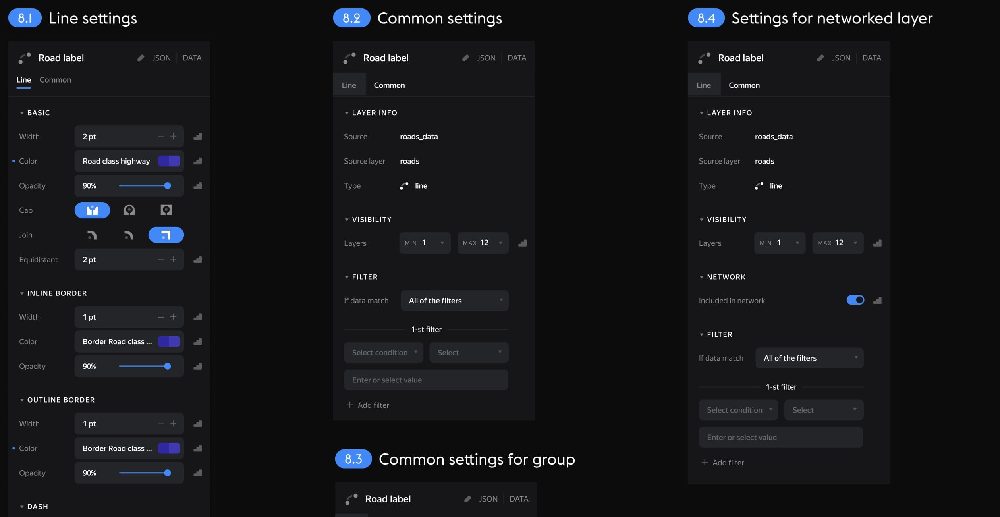
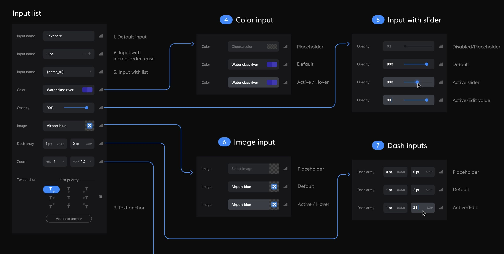
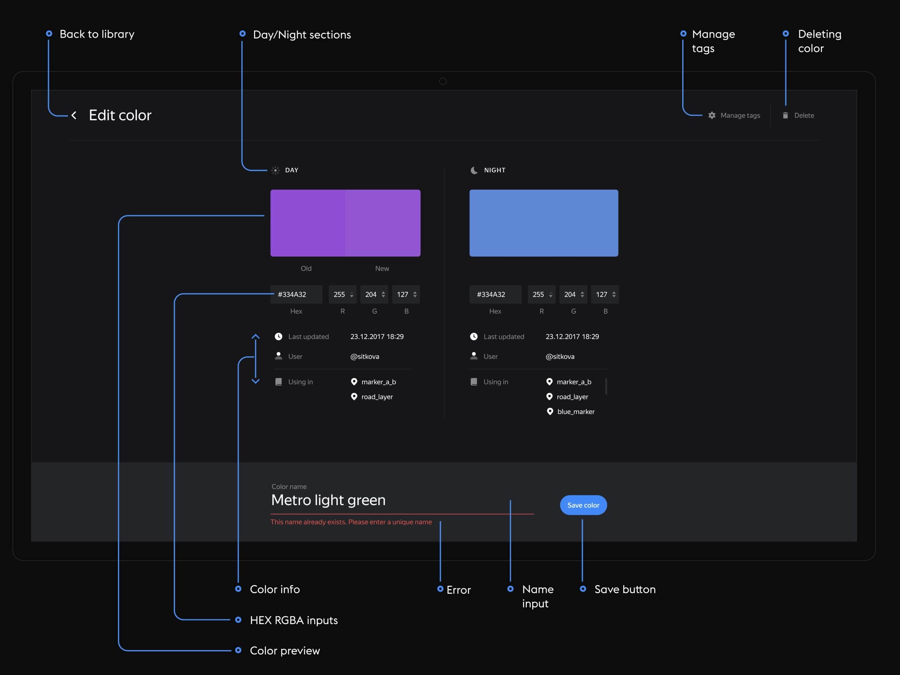
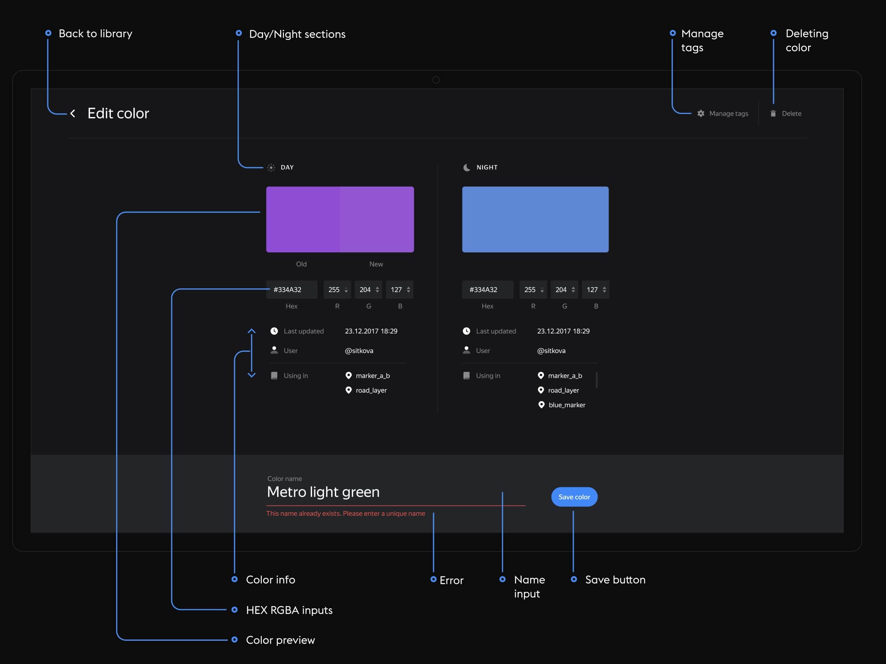

We all use Figma or Sketch for interface design, but have you ever wondered what tool you need to create maps?
If you are a big company, such as Yandex, you should have great tools and invest in your processes. That's why we developed Cartograph in 2018. It is our internal tool for creating and publishing maps.
Here is a sneak peek of my work and Cartograph interface.

↓ working with layers. each layer is a sheet of data to which a style is applied. You can edit individual layers as well as entire groups of layers.

↓ layer settings. different types of data have their own settings.
 ↓ zoom logic. for precise adjustment across zoom levels, breakpoints or smooth value transitions are used.


↓ working with colors. the color picker supports all color schemes. styles can be saved and updated.
 

↓ settings. you can choose to display all types of data and customize Cartograph to your liking.


↓ json editor. you can write styles for the map using code if needed.

↓ working with branches. efficient branch management and release system like GitHub.

↓ and some design fun